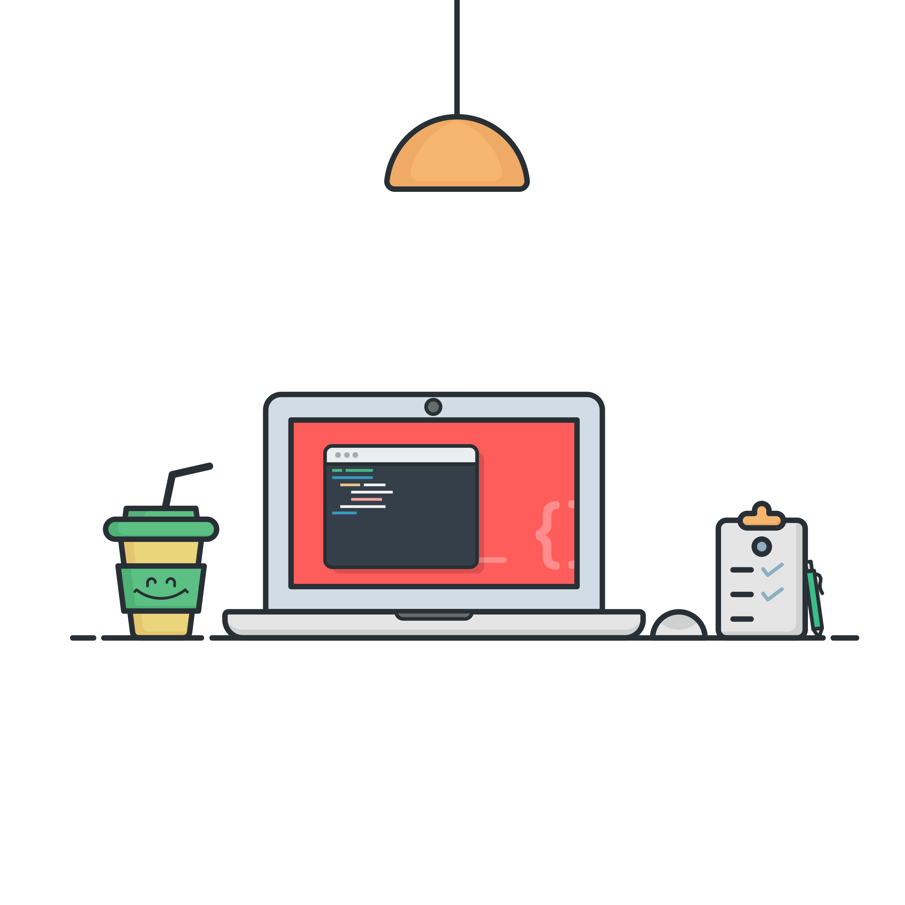
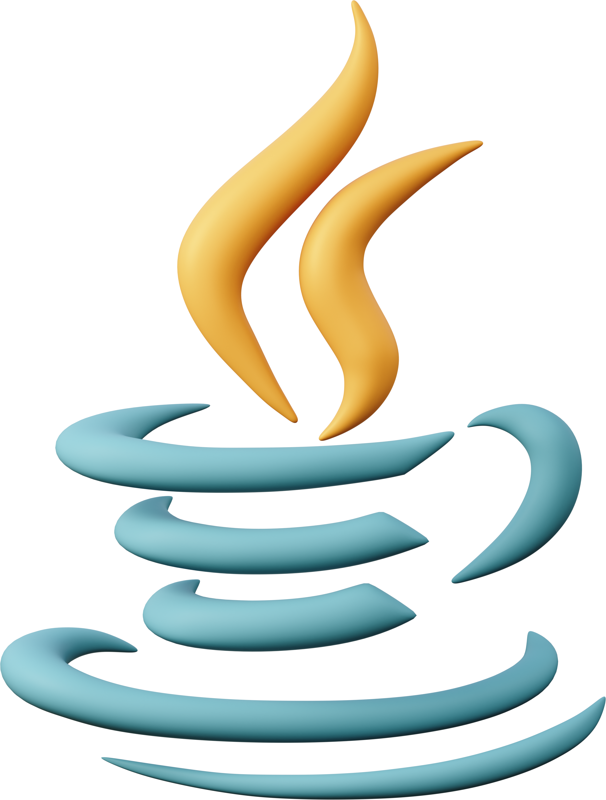
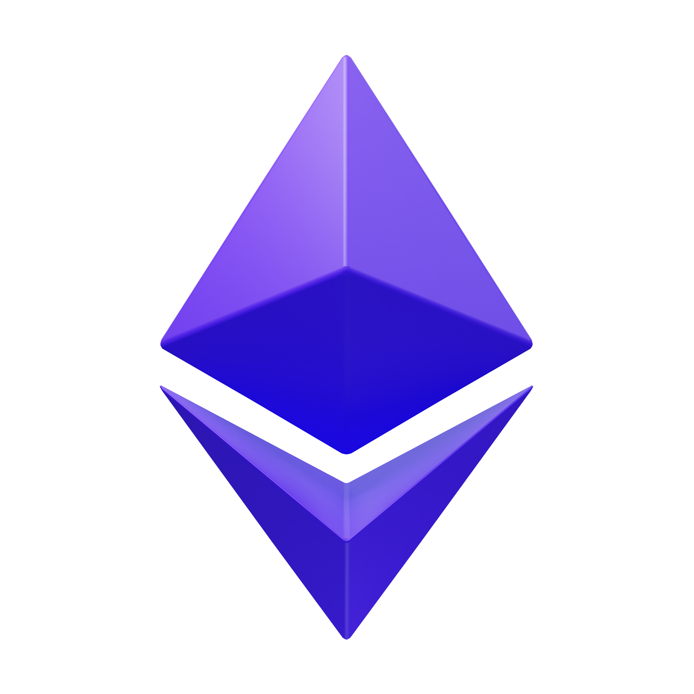

Tecnologías aplicadas a diversos desarrollos
💻 Front-End
HTML5, CSS3, Flexbox, Responsive Design, Js
Diseño interfaces limpias y funcionales usando HTML5, CSS3 y JavaScript. Me enfoco en crear sitios responsive con Flexbox y media queries, que se adapten a cualquier dispositivo. Aplico buenas prácticas de accesibilidad y estructura semántica.
⚙️ Back-End
Java, Node, Django, MySQL, Servlets, JDBC
Aprendí Back-End con Java, JDBC y MySQL. Implementé conexiones a bases de datos, manejo de formularios y operaciones CRUD desde el servidor usando Servlets. Me interesa seguir profundizando en arquitectura y seguridad. Tengo conocmientos de node y react.
📱 Mobile
Android
Realicé una app móvil sencilla para Android con Kotlin en Android Studio como parte de mi formación. Aprendí a trabajar con vistas, eventos y layouts, entre otros. Me interesa seguir explorando Android Studio y experiencia de usuario en móviles.

💎 Blockchain
Solidity, Smart Contracts, Web3.js (básico)
Exploré el desarrollo de smart contracts con Solidity en la red Ethereum. Aprendí los fundamentos de Web3 y la lógica descentralizada en EthKipu. Desarrollé smart contracts. Me interesa seguir integrando blockchain en proyectos reales y seguros.
